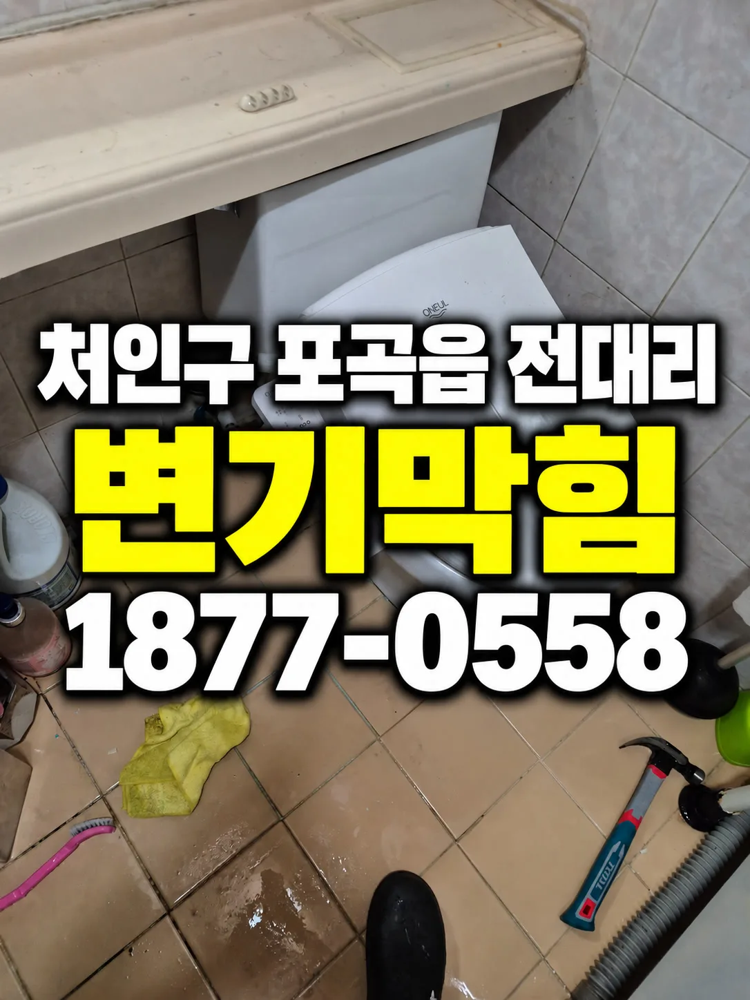
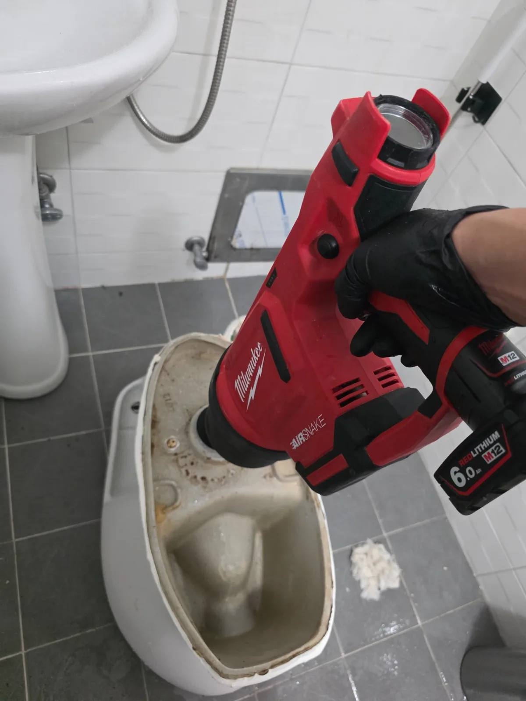

변기막힘 증상은 원인 구간부터 확인합니다
물이 천천히 내려가거나 수위가 차오르는 막힘, 물이 안 내려가는 증상, 이물질 막힘, 반복 막힘, 변기 역류 등 같은 변기막힘 증상이라도 변기·배수구 내부, 연결 배관, 오수관 또는 공용배관처럼 원인이 발생한 위치가 다를 수 있습니다. 신라건축설비는 증상만 보고 작업을 정하지 않고 현장 상태를 확인한 뒤 필요한 작업 범위와 비용 조건을 먼저 안내합니다.
실제 현장에서 확인되는 주요 원인: 물티슈·청소포·음식물·플라스틱 같은 생활 이물질, 변기 트랩 걸림, 하부 오수관 막힘
주요 점검·작업: 석션·에어건·내시경 점검·변기 탈거와 오수관 확인
변기막힘 원인부터 변기뚫는업체 선택까지
변기막힘 원인·변기역류·변기 물 안내려감·변기 이물질·반복되는 변기막힘·변기 탈거·오수관 막힘처럼 검색하는 상황은 표현은 달라도 같은 배수 문제에서 시작되는 경우가 많습니다. 신라건축설비는 단순 관통 여부만 보지 않고 증상, 막힘 위치, 이물질 여부와 배관 상태를 함께 확인해 필요한 작업을 판단합니다.
변기뚫는업체 선택 전 실제 작업사례를 확인하세요
광고 문구만이 아니라 실제로 어떤 증상을 어떤 장비로 진단하고 해결했는지가 중요합니다. 현재 신라건축설비 홈페이지에는 변기막힘 실제 현장사례 62건이 공개되어 있으며 지역, 원인, 작업 과정과 결과를 확인할 수 있습니다.
지역별 변기막힘·변기뚫는업체 실제 출동 기록
최근 변기막힘 해결사례

용인시 처인구 포곡읍 전대리 변기막힘 | 탈거 에어건 물티슈 제거
용인시 처인구 포곡읍 전대리 변기막힘 관통기 석션 시도로 풀리지 않아 변기를 탈거하고 에어건으로 물티슈를 제거한 뒤 통수를 확인했습니다

동작구 사당동 변기막힘 | 변기 탈거 후 하부 휴지 음식물 제거
동작구 사당동 변기막힘 변기 탈거 후 하부 배출구의 휴지와 음식물을 제거하고 에어건 작업과 백시멘트 마감 및 정상 통수 확인을 마쳤습니다

관악구 봉천동 변기막힘 | 유리 화장품 용기 탈거 후 에어건으로 회수
관악구 봉천동 변기막힘 변기 안에 끼인 유리 화장품 용기의 파손 우려를 고려해 처음부터 탈거하고 용기 위치와 변기 각도를 조정하며 에어건으로

남양주시 다산동 변기막힘 | 석션 후 탈거 에어건으로 물티슈와 화장솜 제거
남양주시 다산동 변기막힘 아파트 변기에 물티슈 화장솜 머리카락이 엉켜 석션으로 해결되지 않아 탈거 후 에어건으로 이물질을 제거하고 정상 통수를

수원시 권선구 권선동 변기막힘 | 트랩에 끼인 사과 조각을 변기 탈거로 제거
수원시 권선구 권선동 변기막힘 아파트 변기 내부의 좁은 트랩 구간에 사과 조각이 끼어 변기를 탈거해 이물질을 제거하고 정상 통수 확인과 하부

구리시 인창동 변기막힘 | 내시경 확인 후 석션으로 전자담배 회수
구리시 인창동 변기막힘 변기 내부에 들어간 전자담배를 내시경으로 확인한 뒤 석션 작업으로 회수하고 배수 상태를 점검한 사례입니다

송파구 잠실동 변기막힘 | 휴지죽 석션 후 탈거 에어건으로 해결
송파구 잠실동 변기막힘 현장에서 석션으로 휴지죽을 다량 회수했지만 막힘이 남아 변기를 탈거한 뒤 에어건 작업으로 해결했습니다

구로구 가산동 변기막힘 | 서울 구로구 가산동 변기막힘 석션 에어건으로 물티슈 혼합
구로구 가산동 변기막힘 꽉 막힌 변기를 탈거해 물티슈와 변이 섞인 이물질을 제거하고 석션과 에어건 작업 뒤 통수 확인 및 백시멘트 마감까지

송파구 가락동 변기막힘 | 서울 송파구 가락동 소변기막힘 탈거 후 요석 제거와
송파구 가락동 변기막힘 소변기를 탈거해 배수구 주변의 요석을 제거하고 리지드 샤프트 작업 뒤 호스로 최종 통수를 확인했습니다

마포구 상수동 변기막힘 | 서울 마포구 상수동 파티룸 변기막힘 탈거 후 에어건으로
마포구 상수동 변기막힘 관통기와 석션으로 해결되지 않은 변기막힘을 탈거 후 에어건으로 휴지 뭉치를 제거하고 최종 통수로 확인했습니다
부평구 부평동 변기막힘 | 모텔 메인 오수관 통수
부평구 부평동 변기막힘 객실 변기를 탈거한 뒤 주차장 천장 메인 오수관을 찾아 관통 장비로 막힘 구간 처리
관악구 봉천동 변기막힘 | 변기 탈거와 에어건
관악구 봉천동 변기막힘 탈거한 변기를 에어건과 석션으로 작업하고 하부 오수관 점검 후 재설치 및 최종 통수 확인
서울·경기·인천 변기막힘 출동
서울 42건 · 경기 19건 · 인천 1건의 실제 기록을 기반으로 지역별 사례를 연결합니다. 새로운 현장사례가 등록되면 해당 서비스와 지역 허브에 함께 누적됩니다.